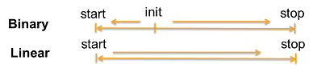
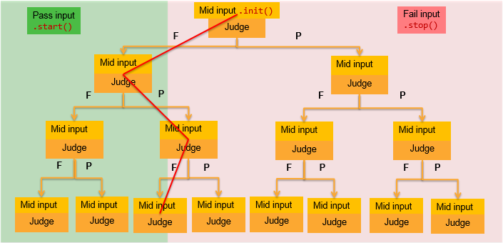
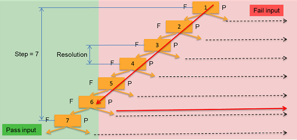
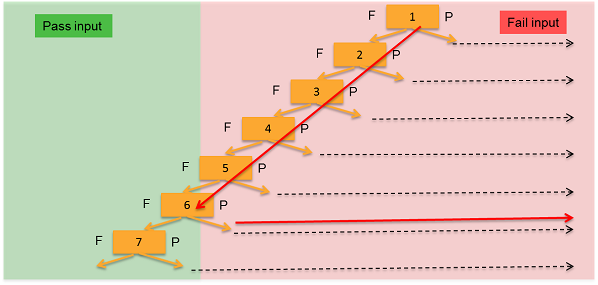
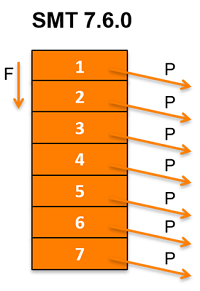
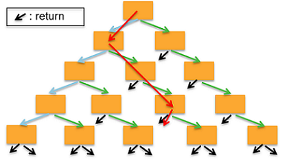
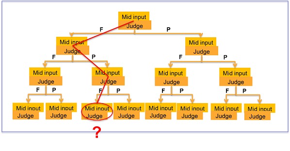
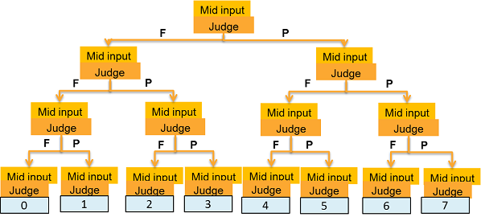

Sequencer-controlled searching with cogo
The cogo() class supports pattern‑based binary, linear, hysteresis linear searches.
| API | Description | Mode |
|---|---|---|
| init() | Specify a value between the start() and stop()
values as the start point of a binary search. |
P |
| pathPin() | Specify a digital pin to be a channel for retrieving the search path of a search. | P |
| resolution() | Specify a value that represents the resolution between steps in cogo searches. | P |
| search() | Specifies a search type: binary, linear or hysteresis linear search. | P |
| searchInput() | Specify a value to search. | P |
| start() | Set one limit of a search range. | P |
| step() | Specify how many steps that you want a binary or linear search to go into the pattern. | P |
| stop() | Set one limit of a search range. | P |
The following diagram shows the relationship between start(), stop(), and init() in binary and linear searches.

Binary search
The following diagram shows how a binary search works.
- start() input must result in PASS.
- stop() input must result in FAIL.
- Mid input is the expected value between the start() and
stop().
If the value set by init() is not the middle of the value range defined by start() and stop(), the resolution for search on the right side differs from that on the left side.

Binary search example
RDI_BEGIN();
rdi.cogo().search(TA::BINARY).pathPin("pinA")
.start(0).stop(4.0).init(1.0).step(3).blockBegin();
rdi....(rdi.searchInput()).execute();
rdi....execute(); // With pass/fail judgment.
rdi.cogo().search().blockEnd();
RDI_END();The following diagram shows the relationship between step() and resolution().

The step can decide the resolution and the resolution can decide the step. If n is the step number, the resolution can be up to 2n.
Linear search
The following diagram shows how a linear search works.

In the above pattern structure, the pattern number is 7, which is equal to the step number.

In the above pattern structure, the pattern number is 1.
Linear search example
RDI_BEGIN();
rdi.cogo().search(TA::LINEAR).pathPin("pinA")
.start(0).stop(4.0).step(10).blockBegin();
rdi....(rdi.searchInput()).execute();
rdi....execute(); // With pass/fail judgment.
rdi.cogo().search().blockEnd();
rdi...
RDI_END();
When making judgment codes or setting up start() and stop(), start a linear search from the fail branch of the root cogo node. This is because the cogo linear structure is based on a "return on pass" method.
Hysteresis linear search
The following diagram shows the node structure of a hysteresis linear search.

This search method can start the second search right by the end of the first search. The search turns the direction after the first threshold has reached.
Hysteresis linear search code structure
RDI_BEGIN();
...
rdi.cogo().search(TA::HYST_LINEAR).pathPin("pinA")
.start(0).stop(4.0).step(10).blockBegin();
...
rdi.dc().pin("INPUT").vForce(rdi.searchInput()).execute(); // Input
...
rdi.dc().pin("output").vMeas().limit(3,TA::NO_LIMIT).execute(); // Output the pass/fail judgment
...
rdi.cogo().search().blockEnd();
...
RDI_END();
Result retrieval
After a search, you can know the search node and result by the retrieval commands.

You can retrieve the search path to see how it arrives at the search result.

SmartRDI can put short test patterns at some key nodes in the search structure. These test patterns have different online results, such as digital capture or error map, to provide the search path information.
See pathPin() for more information about how to use this function to retrieve a result.
Examples
A binary search in a TRIM test
RDI_BEGIN();
rdi.cogo("trim").search(TA::BINARY).pathPin("pinA")
.start(0).stop(0xff).init(0x88).step(4).blockBegin();
rdi.smartVec().pin("SDA").writeData(0x53,8,0)
.writeData(rdi.searchInput(),8,16)
.execute();
rdi.wait(100 us);
rdi.dc().pin("LDO").vMeas().limit(0,5).execute(); // Pass/fail judgment.
rdi.cogo().wait(100 us); // Time long enough for pass/fail judgment.
rdi.cogo().search().blockEnd();
RDI_END();
rdi.id("trim").getSearchResult();
A linear search in a Hysteresis test
RDI_BEGIN();
rdi.cogo("cogo_hyst_linear").search(TA::HYST_LINEAR)
.pathPin("DATA3")
.start(0).stop(3).step(5).blockBegin();
rdi.dc().pin("DATA1").vForce(rdi.searchInput()).execute();
rdi.dc().pin("DATA2").iForce(0 mA).vMeas()
.measWait(100 us).limit(1.2,2.2).execute();
rdi.wait(2 ms);
rdi.cogo().search().blockEnd();
RDI_END()；
rdi.id("cogo_hyst_linear").getSearchResult();
Result retrieval with pathPin()
RDI_BEGIN();
rdi.cogo("cogo_sVec_linear").search(TA::LINEAR)
.pathPin("DATA11")
.start(0).stop(0xff).step(4).blockBegin();
rdi.smartVec().pin("DATA1").writeData(rdi.searchInput(),8,16)
.pin("DATA2").expectData(0xAA,8,16).execute();
rdi.cogo().wait(1 ms);
rdi.cogo().blockEnd();
RDI_END();
rdi.id("cogo_sVec_linear").getSearchResult();
See also pathPin().
Result retrieval without pathPin()
RDI_BEGIN();
rdi.cogo("cogo_linear_wo_pathPin").search(TA::LINEAR)
.start(0).stop(0xff).step(4).blockBegin();
rdi.smartVec().pin("DATA1 ").writeData(rdi.searchInput(),8,16)
.pin("DATA2").expectData(0xAA,8,16).execute();
rdi.cogo().wait(1 ms);
rdi.cogo().blockEnd();
RDI_END()
rdi.id("cogo_linear_wo_pathPin").getSearchResult();
See also pathPin().
Functional changes
- Introduced in SmartRDI 2.4.0
- SmartRDI 2.4.3: Support hysteresis linear searches.
- SmartRDI 7.4.4: The binary search resolution is improved from 2n-1 to 2n (n is the step number) without any code change.
- SmartRDI 7.6.0: Linear search is supported with one subroutine for all search steps.
- SmartRDI 7.10.0: Cogo result retrieval without .pathPin().